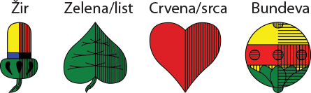

Belot (bela)
Ova igra se igra sa 32 karte (as, kralj, dama, žandar, X, IX, VIII, VII), i to kartama popularno zvanim mađarice. Igrač koji deli nakon mešanja nudi karte igraču s leve strane da ih precepi: igrač može cepati ili, udarivši rukom po svežnju, dati znak da ne želi da cepa. Karte se dele u obrnutom smeru od kazaljke na satu. Izgled boja u kartaškom špilu za belu

Bela u dvoje
Svaki igrač dobije po tri karte licem okrenute prema dole, potom sledeće tri karte, ukupno šest karata. Igrač koji deli zatim okrene sledeću kartu licem prema gore. Tada deli još dodatne četiri karte svojem suigraču i sebi (te se karte nazivaju talon i one se ne smeju mešati s prvih šest podijeljenih karata, nego njih valja odvojiti posebno). Ostatak se karata stavlja na onu kartu koja je pre stavljena licem prema gore, ali tako da se vidi o kojoj se karti radi.
Prvih šest karata se podiže i pristupa se određivanju aduta. Prednost ima onaj igrač koji nije delio. Nakon što dobro pogleda svoje karte, igrač odlučuje hoće li zvati, odnosno odrediti da adut bude ona boja koja je na karti okrenutoj licem prema gore i na kojoj se nalazi ostatak nepodeljenih karata, ili će reći dalje.
U slučaju da kaže „dalje“, igrač koji je delio dobija istu mogućnost koju može prihvatiti ili odbiti. Ako oba igrača odbiju da adut bude ona boja koja je na karti licem prema gore, pravo određivanja aduta ponovno dobiva igrač koji nije delio. On ponovno može izabrati adut, ali da nije ona boja koju je prvi put odbio i koja se nalazi na okrenutoj karti, ili može po drugi puta reći dalje.
Ovaj put igrač koji deli mora odrediti adut između tri preostale boje (bilo koju osim prvotno odbijene). Kada je adut određen, oba igrača podižu preostale četiri karte (talon), tako da svaki igrač u rukama ima ukupno deset karata.
U igri u dvoje ako jedan od igrača dobije sedmicu u adutu u prvih šest karata, on može zameniti tu sedmicu za kartu koja je okrenuta licem prema gore.
Bela u troje
Svaki igrač dobije tri karte okrenute licem prema dole, zatim još tri karte (ukupno šest), a onda još četiri karte u talonu, koje se posebno odvoje od prvih šest karata. Dve preostale karte namenjene su za prvog igrača s desne strane od igrača koji deli (on je prvi na redu). Igrači podižu prvih šest podeljenih karata i prvi igrač s desne strane igrača koji deli mora zvati aduta. Kada je adut određen, igrači podižu talon (igrač koji je zvao podiže šest karata, a ostali četiri). Tada igrač koji je zvao, tj. odredio adut, izabere iz svojih karata dve koje će odbaciti, tako da sva trojica sada imaju jednak broj karata u rukama (deset). Odbačene karte pripadaju igraču koji je zvao adut. On ih odlaže među svoje štihove.
Bela u četvoro
Glavno obeležje bele učetvoro jeste to da se igra u parovima. Dva suprotstavljena kartaška para imaju cilj da zajedničkom igrom sakupe više od pola bodova od ukupne igre.
Svaki igrač dobije tri karte okrenute licem prema dole, zatim još tri karte (ukupno šest) i potom dve karte u talonu koje treba posebno odvojiti od prvih šest. Prvih šest karata se podiže i počinje određivanje aduta. Prvi je na redu igrač sa desne strane od igrača koji deli (u belotu se sve osim cepanja odvija u smeru suprotnom od kazaljke na satu). Igrač karte iz talona sme pogledati tek kada on ili neko drugi zove.Igrač odlučuje hoće li zvati (odrediti adut) ili će reći "dalje". Ako kaže "dalje", diže talon i pravo na određivanje aduta dobija sledeći igrač s desne strane, koji sada ima ista prava kao i prethodni. Kada dođe red na igrača koji je delio, on mora zvati (to se zove "mus" - nem. müssen = morati). Kada neko odredi adut, svi dižu talon i igra počinje.
Igranje
Igru počinje igrač prvi zdesna do igrača koji je delio. Sledi ga igrač do njega koji ne samo da mora poštovati boju koja je bačena nego treba baciti i kartu koja je veća od prethodne bačene karte. Na primer, ako prvi igrač baci pikovu osmicu, a sledeći igrač u rukama drži pikovu sedmicu i pikovu desetku, on mora na osmicu baciti desetku, a ne sedmicu. To je takozvano pravilo ibera (prema nemačkom über - iznad). Uvek treba baciti jaču kartu, naravno, ako je igrač ima. Ako igrač nema početnu odigranu boju, onda baca adut. Ako nema ni aduta, tek onda može baciti bilo koju kartu.
Ako je prva karta adut, sledeći igrač mora baciti jaču kartu u adutu, ako je ima. Ako se prvo odigra boja koja nije adut, a igrač koji je na redu nema karte za poštovanje pa baci adut, igrač nakon njega mora poštovati početnu boju, ali ne mora pošoivati "iber", tj. ne mora baciti jaču kartu od početne, i to upravo zato što je igrač prethodno bacio adut. Na primer: adut je srce, prvi igrač baci pikovu osmicu, sledeći igrač nema pik pa preseče boju adutom i baca bilo koje srce. Sledeći igrač u rukama drži pikova asa i pikovu sedmicu i slobodno može baciti pikovu sedmicu, jer pravilo jače karte ne vredi kada se neka boja preseče adutom. Igrač koji je bacio najjaču kartu, kupi štih i igra prvi u sledećem bacanju.
Ako se bilo koje od navedenih pravila prekrši, protivniku/protivnicima se pišu 162 boda (zbir vrednosti svih karata) + sva zvanja koja su bila zvana u tom deljenju (bez obzira na to ko je zvao). Tu partija završava i kreće se ispočetka u novo deljenje.
Zvanje
Pod "zvanjem" se podrazumeva poseban niz karata koje igrač ima u rukama a koji mu donosi dodatne bodove. Postoje četiri vrste zvanja:
- Četiri iste karte
- 4 žandara: 200 bodova
- 4 devetke: 150 bodova
- 4 asa, desetke, kralja i dame: 100 bodova
- Niz karata iste boje (od 3 do 5 karata) Kada je u pitanju zvanje, onda je poredak karata sledeći: as, kralj, dama, žandar, desetka, devetka, osmica i sedmica.
- 3 karte u nizu iste boje vrede 20 bodova
- 4 karte: 50 bodova
- 5 karata: 100 bodova
- Šest ili sedam karata zaredom iste boje vrednuje se jednako kao i niz od pet karata, dakle 100 bodova.
- Osam karata iste boje naziva se "belot" i igrač koji ga je dobio istog trena pobeđuje, bez obzira na dotadašnji tok igre (kao da odjednom osvoji 501 bod u beli udvoje, 701 bod u beli utroje ili 1001 bod u beli učetvoro).
- Kao i imenom igre, "belot" se još naziva i slučaj kada igrač u rukama ima kralja i damu u adutu. Bela vredi još dodatnih 20 bodova.
Četiri osmice i četiri sedmice ne vrede ništa.
Kod licitacije zvanja obavezno se prvo mora reći najjače zvanje; ako se utvrdi da je igrač imao jače zvanje, priznaje se prvo licitirano zvanje. Zvanje se priznaje samo onom kartaškom paru koji ima najjače (najvrednije) zvanje. Drugom kartaškom paru ne priznaje se ništa, pa čak i ako u rukama imaju nekoliko slabijih zvanja, koja, kada se zbroje, vrijede više od zvanja suprotnog para.
Četiri iste karte (izuzev osmica i sedmica) jače su od niza od pet karata. Između dva niza koja sadržavaju jednak broj karata, prednost ima onaj niz koji sadrži višu kartu; dakle niz "osam, devet, deset, žandar" slabiji je od niza "devet, deset, žandar, dama".
Ako se pak dogodi da dva igrača iz suprotnih kartaških parova imaju jednako vredno zvanje, prednost dobija onaj koji je imao pre pravo na određivanje aduta (onaj koji je bliže igraču koji je delio s desne strane). Zvanje se pokazuje odmah na početku igre. Pita se ostale igrače imaju li zvanje; ako imaju, koliko i dokle, da se utvrdi tko ima pravo na njega.
Igrač koji u rukama ima kralja i damu u adutu, belu zove u trenutku kada prvi put baci jednu od te dve karte. Važno je napomenuti da je igrač obavezan jasno istaknuti ostalim igračima da ima zvanje bele, a to će učiniti tako što će reći bela prilikom prvog bacanja bilo kralja bilo dame. Belu je obavezno najaviti, dok odbacivanje druge karte koja čini belu nije obavezno, iako se može popratiti rečima od bele.
Kod bele učetvoro, kada igrač ima pravo na zvanje, onda automatski ima pravo na zvanje i njegov partner.
Bodovanje
Svaki igrač skuplja svoje štihove. Igrač koji nosi zadnji štih dobija još dodatnih 10 bodova. Igraču ili kartaškom paru se zvanje (uključujući i belu) ne priznaje ako nisu pokupili barem jedan štih. Ako igrač ili kartaški par pokupe sve štihove, dobijaju još dodatnih 90 bodova.
Takozvana čista igra (igra u kojoj nije bilo zvanja) iznosi 162 boda. Igrač ili kartaški par koji je zvao mora skupiti najmanje pola+1 boda od ukupne igre, ako želi proći. Dakle ako je igra čista, treba se skupiti 82 boda za prolaz. U suprotnom se ne prolazi nego pada.
Zbir bodova u igri raste ako su u deljenju zvanja. Sva zvanja se sabiraju i pridodaju na 162. Od dobijenog iznosa se za prolaz ponovno zahtijeva pola+1. (Ako je bilo 20 zvanja, igra iznosi 182 – prolaz je 92; ako je bilo 50 zvanja, igra je 212 - prolaz je 107 bodova).
Kada se bela igra utroje, igrač koji zove adut treba skupiti više od zbrira bodova ostala dva igrača.
Bodovanje u dvoje
Ako je igrač koji je zvao adut prošao, tj. skupio više bodova od protivnika, obojici igrača se piše zbir štihova koji su osvojili.
Ako je igrač koji je zvao adut pao, tj. nije skupio više bodova od protivnika, protivnički igrač osvaja sve njegove bodove + svoje bodove.
Protivnikov pad beleži se crticom, ne nulom.
Bodovanje u troje
Ako je igrač koji je zvao adut prošao, tj. skupio pola+1 od igre, svakom od troje igrača se pišu osvojeni bodovi koje su osvojili u pokupljenim štihovima.
Ako je igrač koji je zvao adut pao, on ne osvaja ništa. Ostala dva igrača osvajaju onoliko koliko su pokupili u štihovima.
Pad se beleži crticom, ne nulom.
Bodovanje u četvoro
Ako je kartaški par koji je zvao adut prošao, tj. skupio pola+1 bod od ukupne igre, svakom se paru sabiraju bodovi koje su uspeli skupiti. Ako je kartaški par koji je zvao adut pao, tj. nije skupio pola+1 bod od ukupne igre, sve bodove dobija suprotni kartaški par. Pad se beleži crticom, ne nulom.
Pobeda
Bela se ne igra unedogled, već do određene granice.
Postoje dva načina da se završi ova kartaška igra. Prvi se način među kartašima naziva igrati na dosta – igraču je ili kartaškom paru cilj skupiti u zadnjem odlučujućem deljenju onoliko bodova koliko mu nedostaje da dosegne dogovorenu granicu, bez obzira na to je li skupio pola+1 od celokupnog zbroja igre (na primer: ako se u beli udvoje igrač nađe u situaciji da ima 496 bodova, dakle nedostaju mu još 5 bodova da bude van, a prva je karta koju baci žandar u adutu (koji vredi 20 bodova), po pravilu "igrati na dosta" ovde se igra završava). Samo par koji osvoji štih može reći "dosta".
Drugi način da se bela privede kraju jest pravilo igrati na prolaz. Igrač ili kartaški par treba skupiti pola+1 od bodova ukupne igre ako želi proći. Drugim rečima, zadnje se odlučujuće deljenje po ovom pravilu ne razlikuje od ostalih deljenja.
Prema službenim pravilima igra se na "dosta" (igrač ili par moraju dostići dovoljan broj bodova i moraju osvojiti štih).
Bodovna granica (bela u dvoje)
Pobeđuje onaj koji prvi skupi 501 bod.
Bodovna granica (bela u troje)
Pobeđuje onaj koji prvi skupi 701 bod.
Bodovna granica (bela u parovima)
Pobeđuje onaj koji prvi skupi 1001 bod.